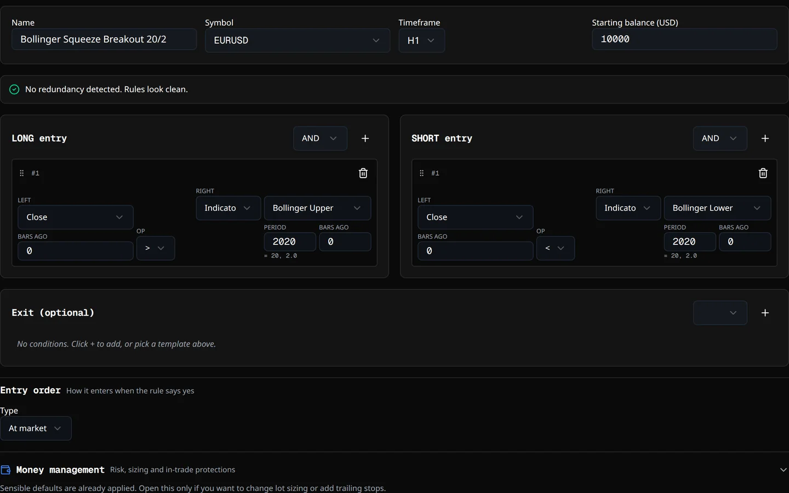
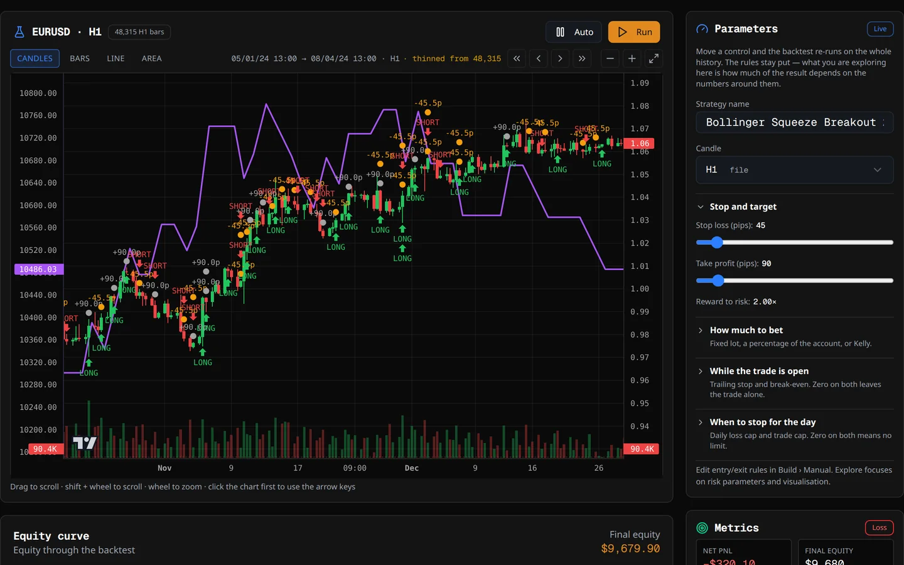
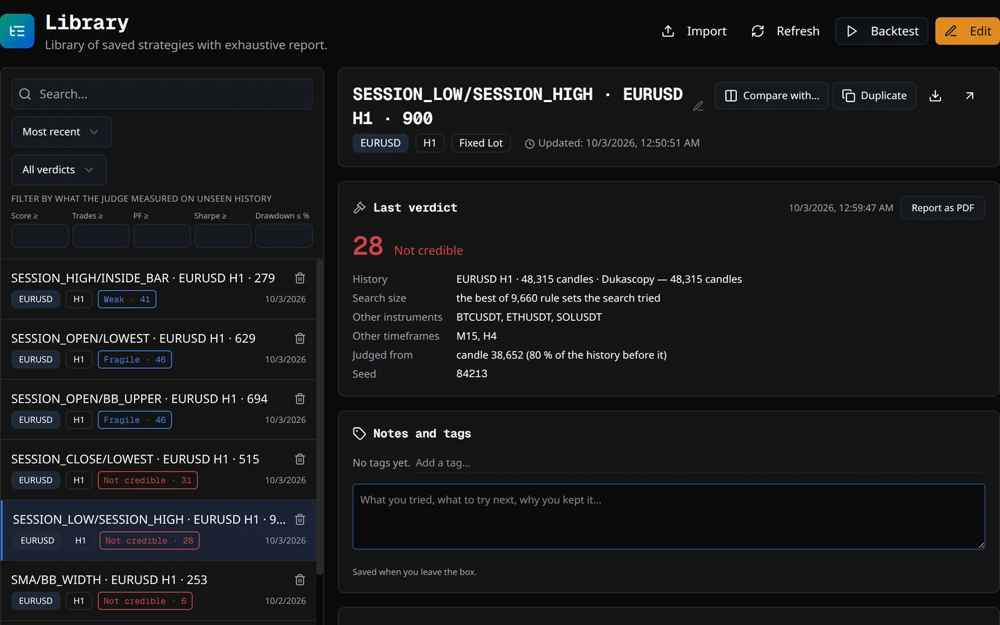
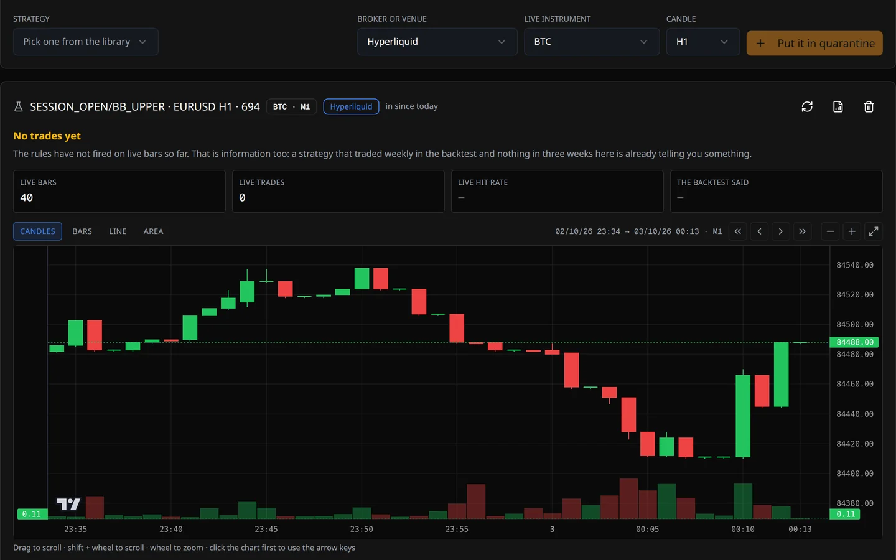
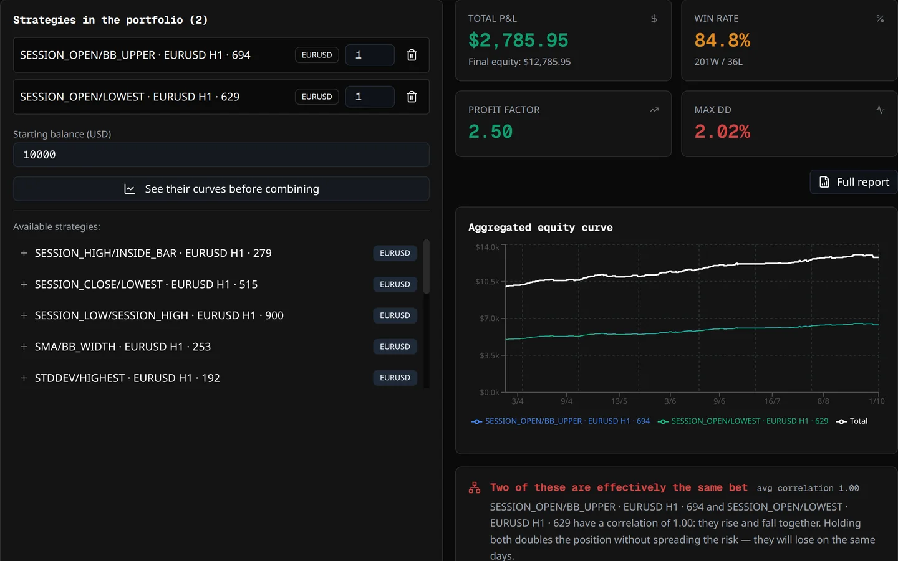
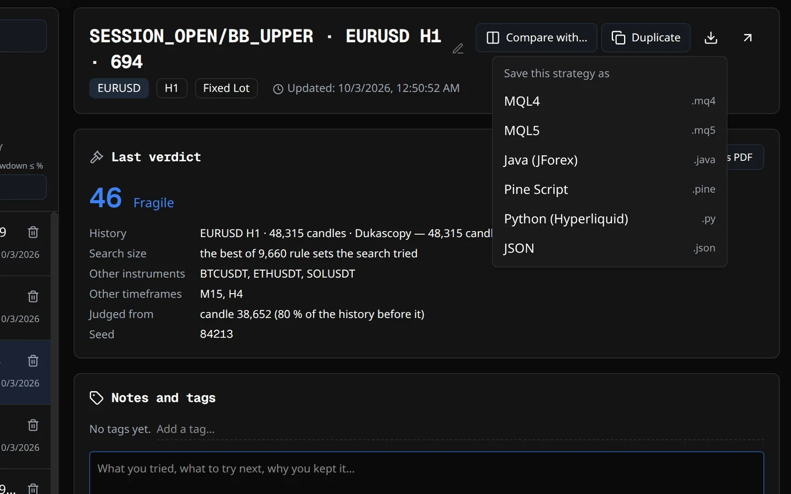
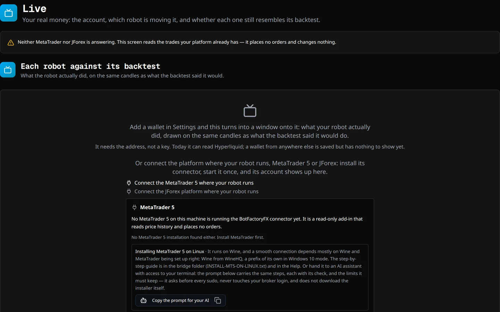
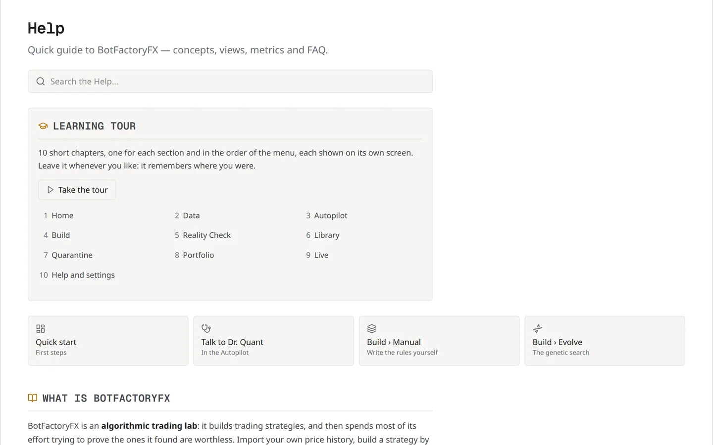

How it works
From a price file to a robot you can trust — or throw out
The screens of BotFactoryFX in the order the work happens, which is the order of the menu in the program. Each one shows what you do there and the program itself doing it: recorded on real runs, sped up where a search takes minutes, never mocked up.
1 Data
Bring the history you will test on
Everything starts with candles. Six doors bring them in, and the program checks what arrived before you build anything on it.
- Pick a source: your own CSV — from your broker, or TradingView’s chart export —, Dukascopy (1,615 instruments, no account), Binance (over 500 pairs), MetaTrader 5, JForex or a web3 wallet.
- Choose the instrument, the candle and how far back. Downloads run in the background, several at once, while you work on something else.
- Read the audit. Gaps, duplicates, holidays — and a history that carries the future, where one hour of the day already holds the whole day’s high and low.
- Load a second instrument and the judge can try your rules somewhere else. The screen tells you when it can.
Good to knowEvery history is born with its costs — spread, commission and swap —, read from your own terminal when it comes from MetaTrader, and the screen says where each figure came from.
2 Autopilot
Ask for it in one sentence
Build me a breakout system for EURUSD on H1. I can stand a 15% drawdown.
The sentence is read in code, not by an AI, and runs the same search, the same judge and the same portfolio simulation you would run by hand.
- Say what you want: the instrument, the timeframe, the style, how much drawdown you can live with.
- Check what it chose for you. Before it starts it shows what it understood and, under You did not say, so I chose, every decision it took for you, each with its reason. Change any of them with another sentence.
- Press Start and watch the six phases: search, measure, select, judge, save, combine.
- Read the outcome. Everything it kept goes to the Library with its verdict — the failures too, so you can see why. Only what the judge passes is combined into a portfolio.
3 Build
Or build it yourself, three ways
The Autopilot is a shortcut through the same tools. Build is where you drive them, on the history open under Data.


Manual write the rules
An editor of AND/OR rule blocks: 56 indicators and price fields to choose from, plus formulas you write yourself. Start from a guided template or from nothing; a checker flags two rules that say the same thing. Stop and target in pips, in ATRs or in percent of the price, and the backtest is one click away.
Evolve let the search find it
A genetic search where every individual is a complete strategy, on every core you have. It writes seven families — trend, breakout, reversion, price action, momentum, volatility and divergence — and mixes them when that pays. The Wheel searches, judges and goes round again on its own.
Explore look before you commit
Move a number — the stop, the candle, the risk — and the backtest re-runs over the whole history as soon as you let go. Nothing here is judged or saved: it is for looking at an idea.
4 Reality Check
Then put it in front of the judge
It doesn’t ask “did it make money?” but “is the result real?”. Thirteen checks, nine of them on the last stretch of history — the stretch the search never saw.
- Open the strategy and run the check. It already knows how many variants were tried to find it: the best of ten thousand has to prove more than the first.
- Watch it work: out of sample, better than chance, walk-forward, parameter sensitivity, Monte Carlo, other instruments, other timeframes, costs and more.
- Read each row: what was measured, the number that came out, and why it matters.
- Read the verdict in plain words — solid, fragile, weak, not credible or not enough evidence — with the figure that caps it.
Good to knowIt also tests the procedure that found the strategy, repeating the whole search on five windows of history.
5 Library
Every strategy keeps its record
What you keep goes to the Library with its verdict, the history it was measured on and how many variants were tried to find it.

- Find it: search, sort by date, name or symbol, filter by your own tags.
- Open the full report: the curve, the rules in plain words, every trade — and the profit factor with its 90% margin, which comes out wide when there are few trades, as it should.
- Compare two strategies side by side, or duplicate one to change it without touching the original: the copy keeps its verdict and its count.
- Print it: the report on paper carries the rules in words and the judge’s verdict.
6 Quarantine
Live candles before live money
A backtest measures the past. The Quarantine runs the strategy on the candles your broker is publishing now and holds the record up against the backtest that approved it.

- Choose the strategy, the venue and the candle: Hyperliquid, any MetaTrader terminal you have open, or JForex.
- Come back whenever you like. Each visit fetches the new candles and re-runs the strategy over everything gathered. It never expires, and the program asks you for no account.
- Read the band, not a percentage. With six trades, “62% wins” is a correct number that lies; the verdict is whether the backtest still falls inside the 95% band of what is happening.
Good to knowIt places no orders anywhere, so it measures no slippage and no rejections. What it measures is whether the strategy still resembles its own backtest on the real market.
7 Portfolio
Strategies that don’t lose together
Combine what passed the judge and the Quarantine. Each strategy is simulated on its own history, with its own spread and commission, and the curves are joined by date.

- Look at the curves first: each candidate alone, on one chart, to see whether they fall at the same time.
- Give each one its weight and read the combined figures, with what each leg contributed.
- Check the correlation: close to +1 is the same bet twice; close to zero is real diversification.
- Save it under a name and update it as strategies come and go.
Good to knowA portfolio doesn’t end with the simulation. Once its robots trade, Live brings your MetaTrader 5, JForex and web3 wallet accounts together on one screen — each on its own, never added up — and holds each robot up against the strategy it came from.
8 Export
Take it to your platform
Every saved strategy is one click away from native code for five platforms: MQL4, MQL5, Java for JForex, Pine Script and Python for Hyperliquid. What gets written is the strategy the judge measured.

- Download it from the Library, for the platform you trade on.
- Install it the way each platform expects: the Help has a chapter on each one, step by step.
- Keep the protection on: account cut-off, trading hours and Friday close travel inside the robot.
Good to knowThe code is compiled for real with each platform’s own compiler before a version is released — the robot you download is one that builds.
Someone else’s robotGot a robot in MQL4 and trade on JForex or in Python? If its rules fit in the builder, rebuild it by hand, check it with the judge and export it to any of the five platforms.
9 Live
All your accounts, on one screen
Live brings your accounts together on one screen — MetaTrader 5 and JForex through their connectors, web3 wallets from their public address — each on its own, and draws their real trades on the chart.

- Connect once: the screen offers to install the connector for MetaTrader or JForex, the same one that brings the history.
- See each robot next to its strategy. The magic number it carries ties it to the Library, and the program measures whether it still does what it promised.
- Hear about trouble: a robot that stops, or one that reaches its account cut-off.
Good to knowReading an account needs no key, so none is asked for: a stored secret that is never used is risk without benefit.
Along the way
The manual comes with it
You are never left alone with a screen you don’t understand.

- The tour walks you through every screen in the order of the work, the first time and whenever you ask for it again.
- The Help lives inside the program, with the same chapters as the Docs on this site.
- Dr. Quant answers questions in the Autopilot conversation, with your own AI key or a model running on your machine, and tells you what each answer cost.
Your turn
Try all of it in your browser
The browser version is almost the whole program — the search, the Autopilot, the full Reality Check, the export — with no sign-up and no time limit. Only saving your work and connecting your broker need the desktop app.